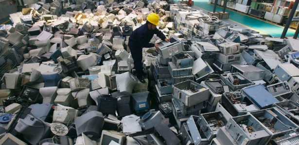

 Já podemos adiantar que sim! Aliás, existem empresas especializadas nesse tipo de atividade denominada manufatura reversa. Como o próprio nome sugere, tal processo consiste na coleta e no desmonte desses equipamentos, seguindo o caminho oposto ao de fabricação. Com as peças devidamente separadas, torna-se possível dar a correta destinação a cada tipo de componente dos aparelhos. Ferro, alumínio, vidro e plástico, por exemplo, são enviados à reciclagem. Peças mais complexas, como placas de circuito (constituídas por mais de 20 componentes distintos), são trituradas e cada elemento é destinado a um fim.

E como fazer esse descarte?
O que as pessoas podem fazer?
Por isso, é extremamente importante que tanto os pais como a escola cumpram seu papel em relação a esse contexto. É essencial conscientizar as crianças e os adolescentes, atualmente grandes usuários de dispositivos eletrônicos, sobre a importância de dar a destinação correta ao e-lixo e também sobre a responsabilidade que cada indivíduo tem nesse processo. A escola tem o dever e a responsabilidade de repassar conceitos e teorias referentes ao assunto, bem como deixar claras as consequências de não adotar o consumo e o descarte consciente de tais dispositivos. Em casa, os pais têm que dar continuidade a esse aprendizado. Se possível, leve seus filhos com você aos locais de coleta de lixo eletrônico, quando tiverem esse tipo de resíduo em casa. Fazer com que eles vejam com os próprios olhos e tenham a experiência concreta do correto descarte dos equipamentos eletrônicos que consomem fará com que se tornem adultos conscientes do ponto de vista ambiental, responsáveis pelos resíduos que geram.